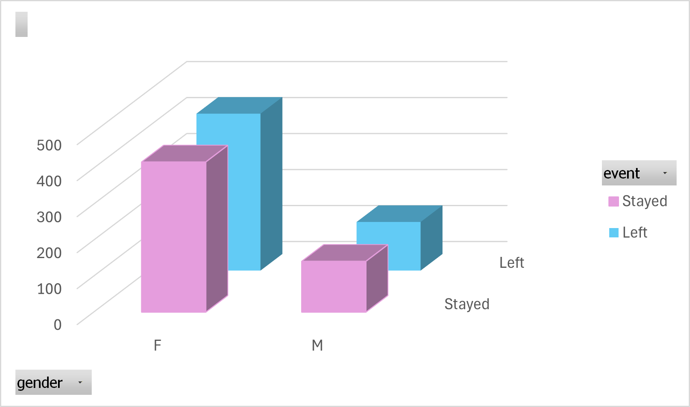
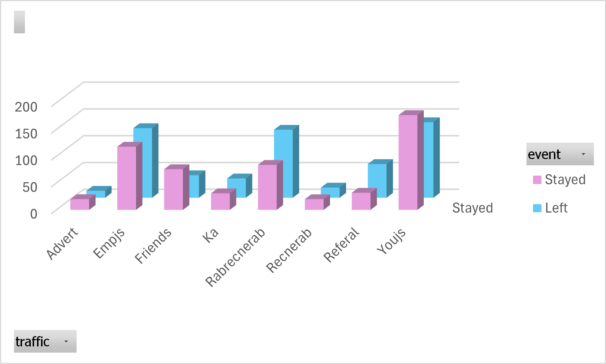
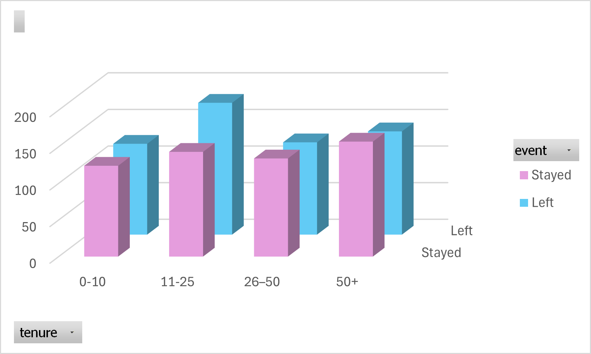
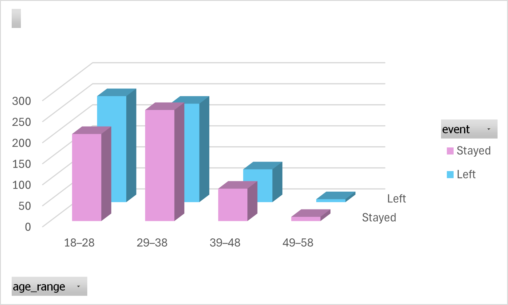

Turnover Report | Excel Analysis Project
Report Generated: Januray 30th, 2026
Comprehensive analysis of a company who has been experiencing a rising amount of employee turnover. This report will look at all of the employees and their shared data and try to pinpoint, where what attribute cause an employee to turnover. Using pivot tables, charts and power query for analysis the turnover data was cleaned, analyze and told as visualztions.


This analysis was conducted using advanced Excel features:


Includes interactive dashboard, raw data, and detailed calculations